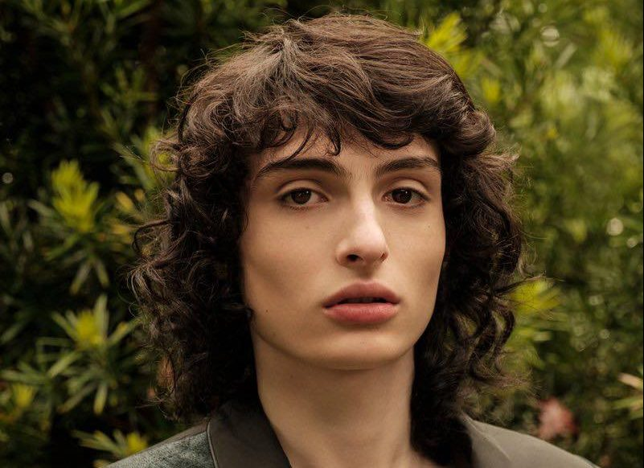
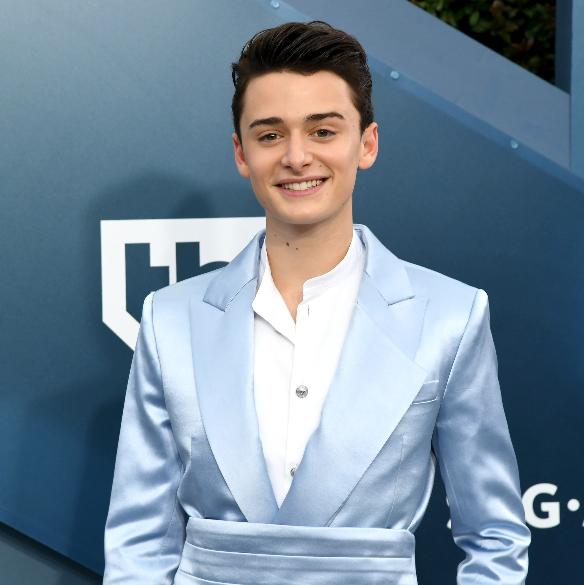
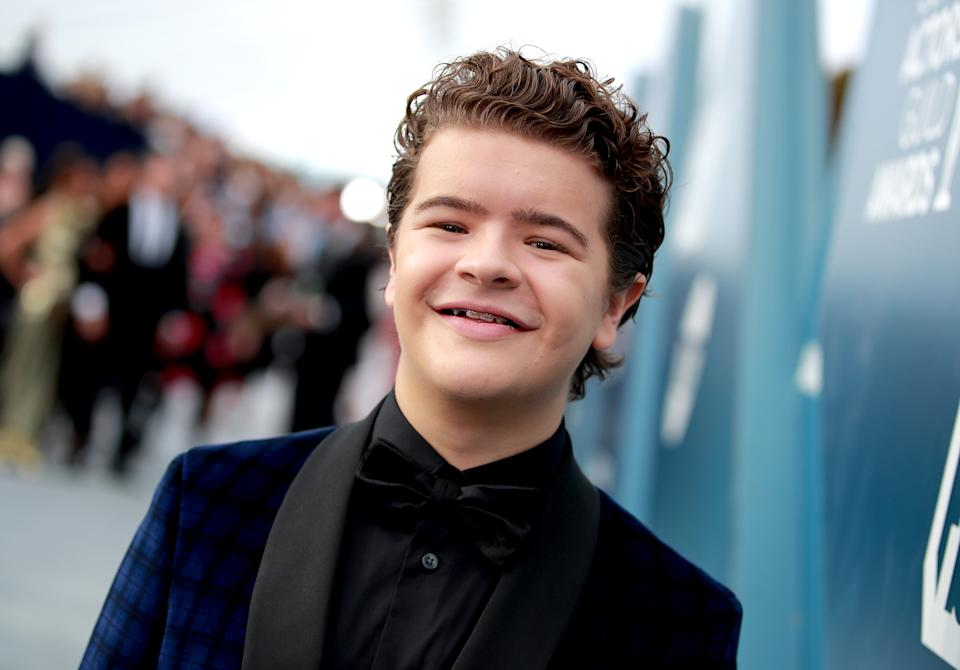
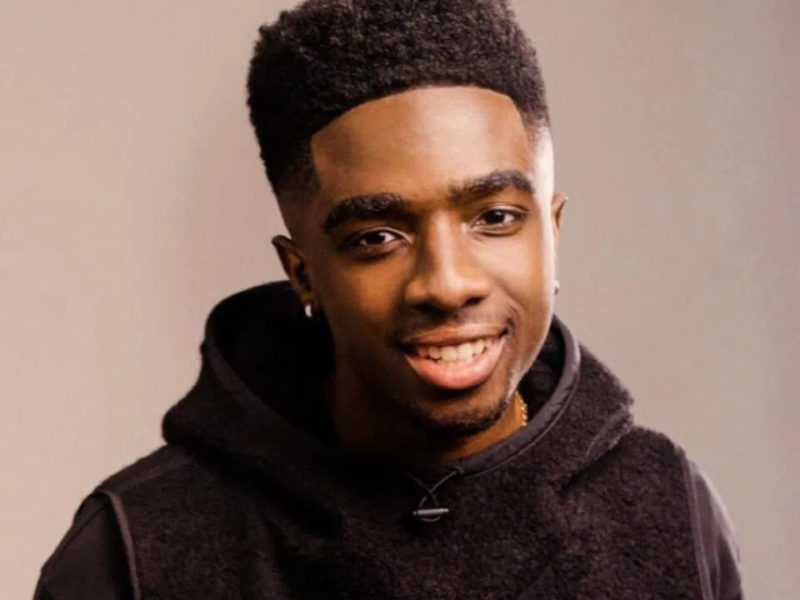
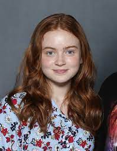

A atriz ganhou reconhecimento mundial e aclamação da crítica por seu papel como Onze na série de televisão Stranger Things da Netflix.
Nacionalidade: Britânica
Nascimento: 19 de fevereiro de 2004 (Marbella, Espanha)
Idade: 18 anos
Finn Wolfhard

'Finn'
Personagem:Mike
Ator, músico, roteirista e diretor
Já recebeu três indicações ao Prêmio Screen Actors Guild para melhor elenco em série de drama, ganhando uma.
Nacionalidade:Canadense
Nascimento: 23 de dezembro de 2002 (Vancouver, Canadá)
Idade: 19 anos
Noah Schnapp

'Noah'
Personagem:Noah
Ator
Conhecido por interpretar Will Byers na série de televisão Stranger Things da Netflix e dar voz a Charlie Brown no filme The Peanuts Movie
Nacionalidade: Norte-Americano
Nascimento: 3 de outubro de 2004 (Nova York,EUA)
Idade: 17 anos
Gaten Matarazzo

'Gaten'
Personagem:Dustin
Ator
Conhecido por interpretar Dustin Henderson na série de televisão Stranger Things da Netflix.
Nacionalidade: Norte-Americano
Nascimento: 8 de setembro de 2002 (Connecticut,EUA)
Idade: 19 anos
Caleb McLaughlin

'Caleb'
Personagem:Lucas
Ator
Começou sua carreira no palco da Broadway como o jovem Simba no musical The Lion King
Nacionalidade: Norte-Americano
Nascimento: 13 de outubro de 2001 (Nova York,EUA)
Idade: 20 anos
Sadie Sink

'Sadie'
Personagem:Max
Ator
Além de participar de Stranger Things, ela também apareceu em episódios de Blue Bloods, The Americans e interpretou Ziggy Berman em Fear Street Part Two: 1978.